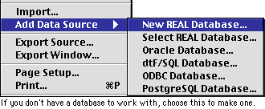
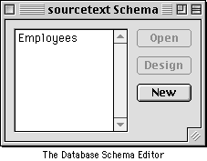
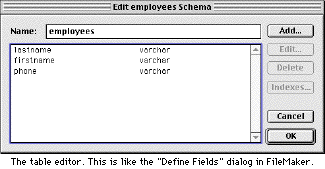
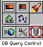

Databases and REALbasic Part 1
By Chris Daley
Covers REALbasic 1.1 and DR2 releases
Contents
Introduction
Database concepts
The REALbasic database control
Other Database Options
Links
Introduction
At the time of writing this article, there is no native support for Database
access within REALbasic 1.1, although it has one of the features being developed
in the Developer releases. Until that time though, those of use who require Database
support will have to rely on third party solutions, some good, some bad and some
just plain ugly! One of the key strengths of REALbasic is its open architecture which
allows you to extend the runtime capabilities substantially through the use of native
plugins (written specifically for RB), Custom classes exported from RB, XCMD/XFCN
(Hypercard external commands and functions), AppleScripts and Shared Libraries. You
can also use AppleEvents to communicate with external database applications.
Database concepts
When using databases in your applications, it is essential that you understand
some of the fundamental concepts of database design. If you are an experienced database
developer, you may want to skip ahead to the sections on using databases within RB.
Otherwise, read on…
The main types of databases that we will be discussing are called Relational and
flat-file databases.
DataBase Management System (DBMS)
DBMS
A DataBase Management System (DBMS) is the runtime engine used for managing
a Database in an operational environment. When you interact with a database either
programmatically or through a provided GUI, you are using that database's DBMS to
do so. Examples of DBMS which are ODBC (programmed), FileMaker Pro (GUI) and 4D (GUI
and programmed).
Tables
Tables are the definition of a grouping and arrangement of data. A table
is like a spreadsheet in that it has columns (called fields) and rows (called records).
In a relational database system, a table is defined for each unique entity that you
wish to capture data for, i.e. you would have a separate table for customers and
products and a third called sales which would be related to both of them. Flat file
databases typically describe only one table per file and use lookups to relate to
other flat-file databases.
Fields
Fields are the columns of the database table and are required for a table
to be defined. Fields can be defined to store a variety of data types, including
numbers, strings and even pictures or other binary data. Each field describes a unique
member of a record (see below). In the customers table, for example, you would have
fields for the customers name, title, address and so forth. Most DBMS require you
to specify additional information about the fields, including maximum length and
data type.
Records
Each row of the table is called a record. Records are a collection of
fields bound in a table which describe a unique entity, such as a customer or product.
It is accepted practice that no two records in a database should be identical. Some
DBMS allow you to specify the value of a field to be unique, so as to prevent this
from occurring. Under these circumstances, the DBMS will throw an error, which you
should plan ahead to catch to prevent unhandled exception errors.
Indexes
To speed up database routines, such as searching, most DBMS use indexes.
Indexes are sorted lists wherein each item refers to a record in the table. If a
field is indexed, it is always sorted and therefore the DBMS can execute queries
faster by searching the index first. Indexes are always a good idea when using large
databases as the speed difference can be noticeable.
Queries/SQL
A query is a request to the DBMS to perform an operation on the database.
Despite what the name may infer, queries are not necessarily searches, as they can
also be used to insert or remove data, perform relational lookups or even define/modify
the structure of a database table. In order to make queries simple and easy to use,
a standardised natural english-like language has been developed by the ANSI committee,
called, imaginatively enough, Structured Query Language (SQL). An SQL query contains
all the information that the DBMS requires to return the requested search. An example
SQL query on our customers table would look like this:
Select name, address from customers where name is 'Fred'
This query would instruct the DBMS to return the names and addresses from the customers table where the customers name is Fred. If there are no records found, the DBMS will return an error code or null value. You should check for this before attempting to use data from the query or your code will throw an nilObjectexception error. SQL is fairly straight-forward and not that difficult to learn (unless you don't speak english), if you've made it this far with REALbasic than SQL should be a doddle. A great tutorial on SQL can be found at ## so I strongly recommend you check it out before attempting to grapple with the REALbasic database control, as it uses SQL (but not exclusively). Once you have learnt SQL, you will find it extremely useful for generating queries across different DBMS.
The REALbasic Database Control
Accessing databases in REALbasic require the use of a number of
objects/classes, specifically:
Database class
DatabaseRecord class
DatabaseCursor class
DatabaseCursorField class
DatabaseQuery control (optional)
Adding/Connecting to a database
There are two ways you can manipulate a database in REALbasic, either
by adding a database to the project through the IDE or connect to it programmatically.
Both methods achieve the same result and allow the same level of manipulation of
the data, but their differences are important to note. Adding a database to the project
makes manipulating and viewing it's contents and structure easy and in a sense, allows
the IDE to act as an interface to the DBMS of the chosen database. If you are designing
an application around a database it is an excellent way to keep the project organized
and well documented internally. If you do not wish to allow the user to connect to
or change the database, it is ideal. If you do want a more flexible way to connect
to databases, you can do so programmatically, which is especially important if you
are going to use a database plugin or allowing the user to specify a database or
even database format.
To add a database in the IDE, simply select the type of database you wish to use from the file>add data source menu. You will notice that there is a new REALDatabase option in this sub-menu as well. We'll go through the steps of creating your own database later. For the purpose of this discussion, we'll use a very simple customers database, named, imaginatively enough, customers.rdb.
Once you select the appropriate database type, the DBMS will present it's standard selection dialogue. In the case of the customers database, you will see a Standard File/Nav Services file selection dialogue. Select customers.rdb from it's location with the sample project. A new database item item will now be added to your project with the name of customers. If you double-click on it you will see a schema window which allows you to edit the format of the database. We will go into editing and viewing the schema in the next section.
Note: Notice how the schema window shows you the available tables
for the database.
Once the database is added to the project, you can now use all of the available methods
of a database object, which will be described in detail later. The new database object
is available globally, just like any other project item. This method is the simplest
an easiest method of adding a database to your project. The other types of DBMS have
different dialogues but the net result is still a database object in your project
window.
If you wish to connect to a database at runtime, you can connect to them programmatically by assigning the results of the appropriate select/open function for the database type you wish to use to a previously declared varibale of type database. In the case of the example database, you would use the openREALDatabase function like so:
Dim testdat as database
Dim dbspec as folderitem
dbspec = getfolderitem("customers.rdb")
if dbspec <> nil then
testdat = openREALDatabase(dbspec)
else
MsgBox "Database not found!"
// Error handler routine if file is not found
end if
You are now able to manipulate the customer database through the testdat variable. To access databases of different DBMS, such as Oracle or dtf/SQL, use the appropriate function (see the database reference at the end of this article). For example:
Testdat = OpenDTFDatabase(dbspec, dbspecBLOB, "Bobe", "CheesyPoofs")
Would open a dtf/SQL database in the above example instead. You will need to consult the documentation for each DBMS to access format specific features, but the database class gives you easy access to generic features and allows you to write portable and DBMS agnostic code.
Okay, so now you have a database object either by adding it through the IDE or accessing it programmatically. What do you do with it now? To an extent, that depends on what it is you want to do with it, but before you can do anything with it, you need to know how the data is arranged in the database so you can search and view the appropriate fields from the proper table. To do this, you need to analyze the databases schema.
Viewing the schema
 If
you are the author of the database, you already know how it is constructed, but if
you aren't you will need to know how it is arranged so you can structure your search
and display code properly. Luckily, REALbasic provides two ways to view this information,
once again, either through the IDE or through code.
To view the schema of the database in the IDE, simply double-click on the database object in the project window. The Schema window will appear listing the currently defined tables in the database, You will have three buttons on the right side: Open, Design and New. Open and Design are only available when you have a table selected.
Selecting Open will display a window showing the data in the table. This has some weirdness in the present implementation.
Selecting Design or Add will open the Edit Schema dialogue which allows you to add, modify and delete fields in the selected table or add and define a new one. We will go into the process of designing a database table later. The Edit Schema dialogue has an editfield containing the name of the table, which you can modify (be aware of DBMS specific naming conventions) or add a new one if starting from scratch. The listbox in the middle contains a list of fields in the selected database and the top three buttons on the right allow you to Add, Edit or Delete field definitions. Cancel and Ok work as you would expect.
 When select Add, Edit or double-click on a field name in the listbox, you are presented with the edit field dialogue which you can create new fields or rename existing ones. You will see that a field must be of a certain type. The REALDatabase field types are smallint, integer and varchar but different DBMS have different field types. Don't worry too much about types at the moment, as we will deal with it later. There are also two checkboxes, Primary Key and Not Null. Primary key, when checked, indicates that the field is the primary index of the table, which you will remember helps speed up database routines. Not null when selected means that the field must contain data for it to be part of a valid record. If you attempt to generate a record without including a value for such a field, the DBMS will generate an error.
As with connecting to a database, you can also view the schema of a database programmatically. To do this, you need to declare a variable of DatabaseCursor class and populate it with the relevant schema, either for a table or for the fields of a table. The relevant methods/properties of the DatabaseCursor class are listed later. The DatabaseCursor class is at the heart of the very flexible database class hierarchy that REALbasic uses. The DatabaseCursor class is like a binarystream in that it is a pointer to a record in a database (or query result) which can be incremented and iterated through using simple and DBMS agnostic methods.
Viewing the Table Schema of a database
Dim dcurs as DatabaseCursor
dcurs = datab.TableSchema
while not dcurs.eof
listbox1.addrow dcurs.IdxField(1).nativeValue
dcurs.moveNext
wend
In this example, we initialize a DatabaseCursor using the Database class' TableSchema method. The cursor returned contains information about the table schema of the database, for example the name of the tables. Particular points to note are:
The TableSchema method only returns information on the tables within the database. To view information about an individual Table's field struture, you use the FieldSchema method of the database class.
Viewing the Field Schema of a database table
Dim dcurs as DatabaseCursor
dcurs = datab.FieldSchema("Employees")
while not dcurs.eof
listbox1.addrow dcurs.IdxField(1).nativeValue
dcurs.moveNext
wend
As you can see, this will list all of the fields in the Employees schema (lastname, firstname, and phone in the table screenshot above).
Querying the database
The purpose of using a database in your project is to display and modify
large amounts of data in a timely and ordered fashion. To retrieve this data, you
will need to query the database, which is, as the title suggests, asking the database
nicely for the information you want. The method that you use to query your chosen
database depends on the individual DBMS, but by far the most popular method is by
SQL. The REALDatabase format supports a limited but growing subset of the ANSI SQL
specification. SQL isn't as difficult to use as it first seems. The full ANSI SQL
specification is still a very small range of keywords and it is a fairly logical
language. The following are some SQL strings you may use to query the customers database.
"Select * from customers"
"Select phone, lastname from customers where firstname = 'bob'"
"Delete * from customers where firstname = 'John'"
The key to the flexibility of SQL is that it is passed to the DBMS as a string variable and can therefore be built by the programmer or end-user on the fly. An example of this is:
dCurs = Database.SQLSelect("Select " + ListBox1.Text + " from " + dBTable + " where " + ListBox2.Text + " = '" + Editfield1.Text + "'")
This line of code builds an SQL query string from user input (the ListBoxes and Editfield) and global string variables (dBTable). The resulting query could look like:
Select Name from Customers where Name = 'Bob'
Or
Select Name from Customers where Company = 'Bobe Inc'
Based on the results of the end-users selections. This allows you
to do some funky stuff like building queries based on the results of queries and
so on. SQL isn't perfect and it does have some shortcomings, but implemented as it
is, it is an extremely flexible tool that should meet 99% of most database designers
requirements. As such, it is a little too large a topic to go into within this article,
but there are several great sites on the web containing all you could want to know
about. Advanced SQL will also be one of the topics in Part II: Advanced Database
Development.
The REALDatabase DBMS supports the following SQL syntax, but be aware that this is
expanding.
create table <tableName>(<column> <type> [not null] [, <column> <type> [not null] primary key (<column> [, <column>]) )
The create statement allows you create a new table and populate it with fields of a specified type. We'll go into this SQL statement later when we discuss designing databases.
delete from <tableName> [where <constraint>]
This statement deletes records that match the comparison in constraint. Be careful when using statements like delete as there are no undo statements in SQL! Visual Basic users will note that there is, as yet, no commit or rollback style commands in the REALDatabase DBMS, so a Delete statement irreversibly removes the data.
select <column> [,<column>] from <tableName> [where <constraint>]
The select statement is used to search the database for records which match the comparisons in constraint. The select statement is very powerful in the ANSI specification, allowing you to join tables and group the results. For now, the REALDatabase DBMS is a little bit lighter, but expect this to change as it gets closer to release quality. You can still use the more powerful clauses with other DBMS, such as dtf/SQL which has complete ANSI SQL support and more (check the documentation for the relevant DBMS you wish to use).
update <tableName> set <column> = <value> [where <constraint>]
The update statement updates the value of a selection of fields based on the comparison in constraint. Using the update statement allows you to update existing records in a database
<constraint> is limited to <columnName> and the relational operators:
<= Less than or equal to
< Less than
= Equals
> Greater than
>= Greater than or equal to
<> Less than or greater than (not equal)
also 'and' and 'or' is supported
Other DBMS use keywords such as 'Like' and 'Slike' for more flexible comparisons. Slike, for instance, performs a 'Sounds-Like' comparison on a string variable. Some DBMS also allow the use or Regular Expressions to make your searches even more powerful and flexible. Once again, you will need to check the DBMS' docs.
Once you have constructed your query string, you need to send it to the DBMS. This can be done either by the two REALbasic database class methods, SQLSelect() and SQLExecute() or through the DatabaseQuery control. We will go into the DatabaseQuery control in more detail later, but for now, be aware of its SQLQuery property which can be either modified in the IDE through the properties window or during runtime through a simple assignment statement:
DatabaseQuery1.SQLQuery = "Select * from customers"
 The two database class methods both submit a query to the database but only one, SQLSelect, returns a DatabaseCursor to be interrogated. Which do you use? Well, the SQLSelect method is for when you when you want to display or modify the results of a query, usually with a select statement, as the method name implies. To use the SQLSelect method, simply create an instance of a database and declare a databasecursor variable to store its result. Using our Customers database, the code would look like this:
Dim dbase as database
Dim dbasecursor as databasecursor
dbase = GetREALDatabase(GetFolderItem("Customers.rdb"))
dbasecurosr = dbase.SQLSeclect("Select * from Customers")
We could then iterate through the databasecursor to view the results of our query. We'll go into this in more depth shortly.
The SQLExecute method is for when you wish to submit a query that you does not return a recordset, such as a delete or update statement. An SQLExecute on the above database would look like this:
Dim dbase as database
dbase = GetREALDatabase(GetFolderItem("Customers.rdb"))
dbase.SQLExecute("Delete from Customers where name <> 'Bob'")
This would delete all the records from the customers database where the name isn't Bob.
The REALbasic database is more or less DBMS agnostic, meaning it behaves the same regardless of which DBMS you are using, with the exception of a few specific commands. This make your code highly portable across different database types, reducing the amount of coding and debugging you have to do. For example, the above code samples could be used for a dtf/SQL database simply by substituting the first assignment, i.e.
Dbase = SelectDTFDatabase(Getfolderitem("customers.dtf"), GetFolderitem("customers.bit"),"dtfadm","dtfadm")
The preceeding code would still work providing both customers database have the same field and table structure. This combined with SQL, a string based query language which can be built on the fly from user input, makes the REALbasic database implementation highly portable and very flexible. It is quite easy to program a database application which has no prior knowledge of the database design it will be required to handle.
A database query using the SQLSelect function returns a DatabaseCursor which you can then iterate though to display the results of your query. We are already familiar with displaying the information contained a DatabaseCursor from our previous schema related queries. Extracting data from a cursor returned by a query is not a great deal more difficult, although it has a charm all it's own.
Advanced users who have experience with MS Visual Basic will note
that the REALbasic DatabaseCursor appears to be unidirectional, although it has no
methods for moving backwards yet, it does have a BOF property, which suggests the
possibility of a reverse iteration method.
It is important to check the results of your query before you attempt to use it.
A standard <> nil test, as you have seen in the previous code examples, will
stop your application from crashing but does not really provide any way of debugging
what is going wrong with you query. If you do not test for the success of your query
and use a DatabaseCursor that has not been initialized, the runtime engine will throw
a NilObjectExceptionError. You can catch this with an error handler or avoid it altogether
as mentioned above. The majority of errors you will encounter will be the result
of an incorrectly formatted query. To avoid this, you should do the following when
developing and debugging:
Displaying the data
Ok, if you've stuck with it this far, you should have a fully loaded DatabaseCursor,
and the will to use it! A DatabaseCursor object or class allows you to iterate through
a set of records returned by a query. You have already used a DatabaseCursor to extract
information about the database's schema, so you shouldn't find this too difficult.
Manipulating the data
Creating you own database
Check your DBMS naming conventions for table and field names and make sure that your
design complies with it.
The DatabaseQuery control
Database reference
Database class
- SQLSelect(selectString As String) As DatabaseCursor
- SQLExecute(executeString As String)
* New functions
- OpenDTFDatabase(dbFile As FolderItem, blobFile As FolderItem, username As String,
password As String) As Database
(For dtF/SQL databases)
- SelectODBCDatabase As Database
(For ODBC databases)
- OpenPostgreSQLDatabase(host as string, port as integer, database as string, user
as string, password as string) As Database
- OpenOracleDatabase(username as string, password as string) as Database
* New function (in 4dpluginPPC)
- Select4DDatabaseByADSP(task as string, username as string, password as string)
As Database
- FieldSchema(tableName As String) As DatabaseCursor
Implemented for RB database and dtf/SQL
- TableSchema As DatabaseCursor
returns a cursor will a list of all of the tables in the database - implemented for
RB database, PostgreSQL, dtf/SQL
- InsertRecord(table as string, data as DatabaseRecord)
DatabaseCursor class
Methods
- BOF As Boolean (Read only - Beginning of File)
- EOF As Boolean (Read only - End of File)
- FieldCount As Integer (Read only - number of fields in cursor)
- MoveNext (Move to next record in cursor)
- Field(Name As String) As DatabaseCursorField
- IdxField(Index As Integer) As DatabaseCursorField
- DeleteRecord
currently only implemented for RB database
- Edit
- Update
- First call Edit, then change fields, then call Update
DatabaseCursorField class
- Name As String (Read only - name of field)
- StringValue As String (Read/write)
- NativeValue As String (Read/write)
- getString As String
- setString(newValue As String)
[getString/setString methods are equivalent to getting/setting StringValue property]
- DatabaseCursorField implements StringProvider interface
DatabaseQuery control
- Database As Database
- SQLQuery As String
- RunQuery
- can be bound to a listbox
DatabaseRecord class
• Column(name as string) As String (read/write)
• FieldCount As Integer
• getIndString(fieldIndex as integer) As String
REALDatabase class
First implementation of internal database engine
- newREALDatabase(spec As FolderItem) As Database
- openREALDatabase(spec As FolderItem) As Database
- only supports very limited SQL dialect so far:
- create table <tableName>(<column> <type> [not null] [, <column>
<type> [not null] primary key (<column> [, <column>]) )
- delete from <tableName> [where <constraint>]
- select <column> [,<column>] from <tableName> [where <constraint>]
- update
- <constraint> is limited to <columnName> <= | < | = | > | >=
| <> value, also 'and' and 'or' is supported
Other Database Options
Presently, the database controls and classes are only available in the
Developer releases of REALbasic. For some people developing commercial software,
this may not be a viable solution, as these releases are no where near stable enough.
The only alternative when using REALbasic 1.1 then is to use a third-party solution.
These options run the gamut of simple to brain-frying, depending on the type of DBMS
you wish to access.
So as a budding database programmer, where do you start? The table below lists all the current thrid-party options, what form they are in and how to get them...
DtfSQL
DtfSQL, developed and released by the german SLAB group is an SQL based
Database Management System (DBMS). It is fully featured with both client and server
versions and is available in a variety of formats and platforms.
Of most interest to 1.1 users are the XCMD and Shared Library versions, available, of course, in 68K and PowerPC versions. There is an excellent demo of the client shared library version by Alex Kushner, available at the café. In general the shared library will be faster than the XCMD although with Dtf this is barely noticeable as it is very fast. The relative merits of shared libraries and externals are discussed later on. Both are small and fast and incur little system overheads.
The DR2 releases have a native driver for DtfSQL databases. Using this driver is the same as using the other built-in drivers.(See below).
Dtf is available as a full-featured demo that you can use to develop your applications, but you must license it if you intend to distribute it. Their licensing fees are quite reasonable and the most up-to date prices can be found on their web site.
Dtf uses ANSI Structured Query Language (SQL) to extract data from
the databases. SQL is an easy to learn syntax with an awful lot of documentation
about it available on-line. Links to a number of suitable sites for finding out more
about SQL are included at the end of this article. It goes without saying that SQL
is too large a topic to discuss here, but it is relatively simple to learn and use,
as well as being portable across DBMS. Dtf is well suited to developing everything
from stand-alone single-database applications to full-blown information client-server
systems.
Dtf uses its own datasource format which isn’t compatible with any other database
types. Its supports all data types including BLOB (Binary Large OBject). The documentation
is quite concise and available in English and German.
Jovis
The Jovis database engine is developed by DASworks and is available in
the form of a collection of externals (XCMDs/XFCNs) which have recently been re-written
for REALbasic. The Jovis database engine uses its own proprietary datasource format
and query language. The downloadable demo includes a sample REALbasic project showing
you how to use its methods and functions and is well commented and shows off some
of the systems features quite well.
You must license Jovis if you intend to distribute it, but their license fees are reasonable. It would seem that DASworks is committed to developing Jovis for REAL basic and their web site is quite helpful. Jovis is well suited to developing stand alone database applications.
mSQL
I have only included this one because it is a topic close to my heart
and a solution that I’m sure a number of RB users will appreciate. MiniSQL is a Unix-based
database server developed by Hughes technology. While the DBMS is hosted on a Unix
server, it is accessible by TCP/IP. I came across it while developing a web site
which used mSQL and found it very useful. The form I used it in was a shared library
compiled for the Mac and available here.
mSQL uses the ANSI SQL standard with a few of its own enhancements.
A server module for Unix web servers called mslq-lite allows you to manipulate an
mSQL database through a scripting language horribly enough based on C. Until developing
a mac based solution, database structure manipulation had to be done through either
Telnet or complex web scripting. The shared library makes this a breeze by being
able to develop my own interface at the speed RB is famous for.
The mSQL shared library is commercial software from Hughes Technology and available
from http://www.hughes.com.au. You need to be running the mSQL server in order for
the mSQL shared library to be of any use to you though. Special commendations to
the author for his efforts in porting the shared library to the Mac.
Simple Database
Simple database is a set of externals allowing basic manipulation
of a proprietary format datasource and query language. Originally developed for Hypercard,
I haven’t yet been able to get a working version of the simple database with RB.
The Hypercard demo looks pretty good, and it's fast, but it caused a number of bus
errors on my PowerTower.
Check out license etc...
FileFlex
Developed as an external for Hyper/Supercard and Xtra for Director, the
FileFlex uses its own proprietary datasource and query language. Toted as the Multi-media
database solution, I found it a little disappointing to the point of not actually
getting it to work. I don’t know whether this was a problem with the XCMD interface
as I kept getting bus errors and freezes.
FileFlex comes in demo form and requires you to license it before distributing it with your application. The site and download package has ample documentation and the hypercard demo works splendidly and several of my Director using friends swear by it. If I can get a working RB demo, I will post it my FTP site forthwith.
ODBC
ODBC (Open DataBase Connectivity) is not presently directly supported
by REALbasic 1.1 but is available in the Dr releases. The distinct advantage ODBC
offers is the ability to use such a large number of industry standard data formats,
such as FoxPro and dBase. The down-side is the enormous installations package (several
Mbs) additional system extensions (and obligatory conflicts) and requires complex
configuration - not for the faint hearted. ODBC uses SQL as its query language.
AppleEvents/AppleScript
While not a database system in themselves, you can use AppleEvents or
AppleScripts to communicate with and manipulate almost any Mac OS based database
system. Probably the best developed and compatible system for this would be FileMaker
Pro which supports a wide range of Apple Events and is highly scriptable. A big downside
is needing to have a licensed copy of the database system installed and running on
the client machine at the same time as your application. While this system would
be inappropriate for a distributed application, it would be an ideal solution for
a FileMaker add-on package or web server. Examples of controlling databases such
as FileMaker Pro via AppleScript/events are at their web site.
A bit about XCMDs Vs Shared Libraries
XCMDs/XFCNs are plugins developed for HyperCard/SuperCard which can also
be used by REALbasic to extend its runtime functionality. XCMD is short for External
Command and XFCN are External Functions. Both are compiled into the resource fork
of your application and their code executed at runtime.
Shared Libraries are ‘code fragments’ or small components of executable code which can be called by an application to do a specific task. Also called Dynamically Linked Libraries, Shared Libraries are a fundamental component of the PowerPC and CFM-68K operating systems. Accessed through ‘entry points’ and memoryblocks, shared libraries are complex to use but allow access to some of the core MacOS toolbox calls. Shared libraries can presently only be used on Power PCs,. XCMDs and XFCNs will work on either PowerPC or 68K systems. If you want to squeeze every last bit of optimisation out, be sure to use the xcmd as opposed to XCMD, as they are PowerPC native. XCMDs/XFCNs by and large have a much easier to use interface than shared libraries and don’t require detailed knowledge of entry points, pointers and other complex abstracts. As far as which one to use, it’s really a matter of personal programming preference and the needs of the particular project.
Links:
www.macdb.com – Database links, using AppleScript
with ODBC
SQL Tutorial
– An excellent introduction to SQL.
Interactive SQL Tutorial – Another introduction
to SQL.